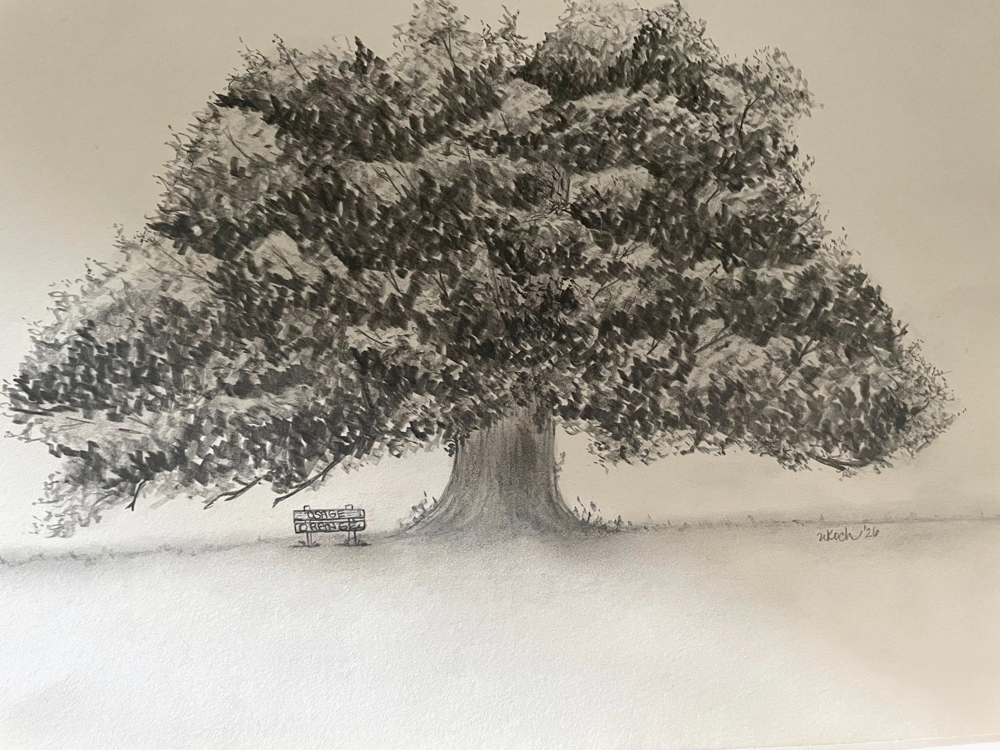
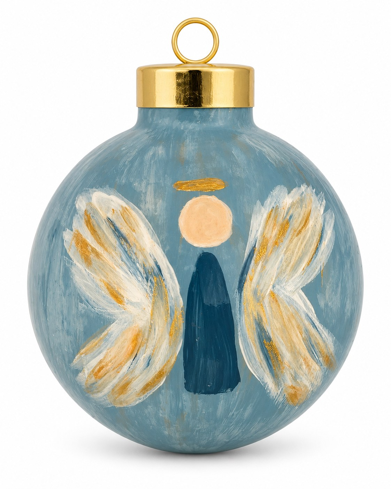
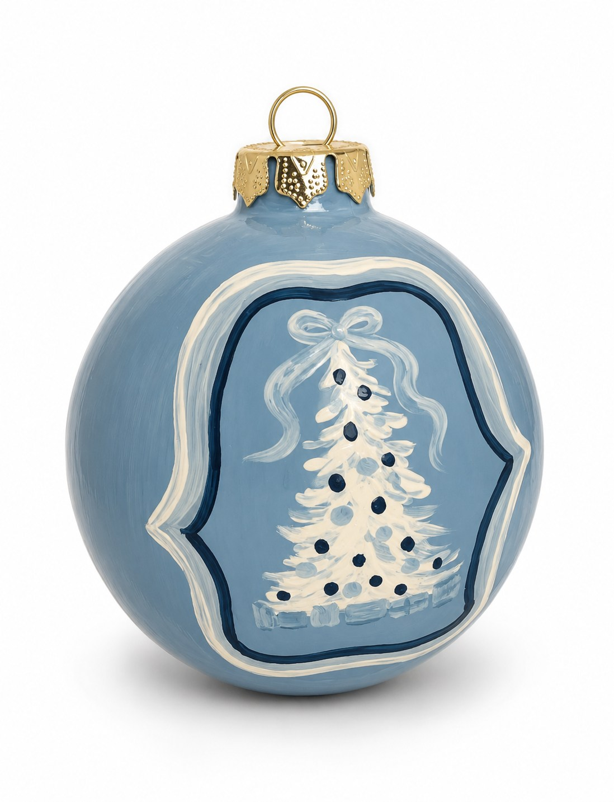
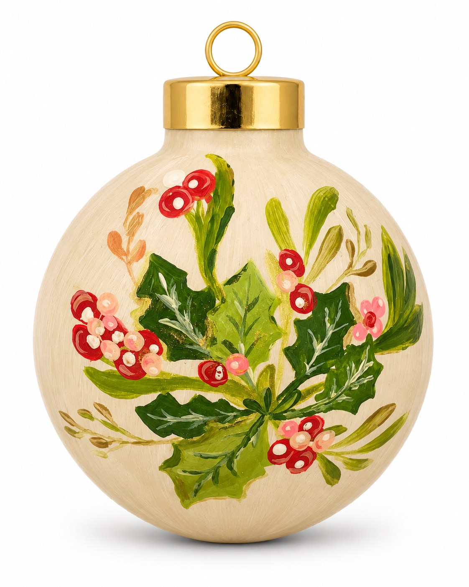
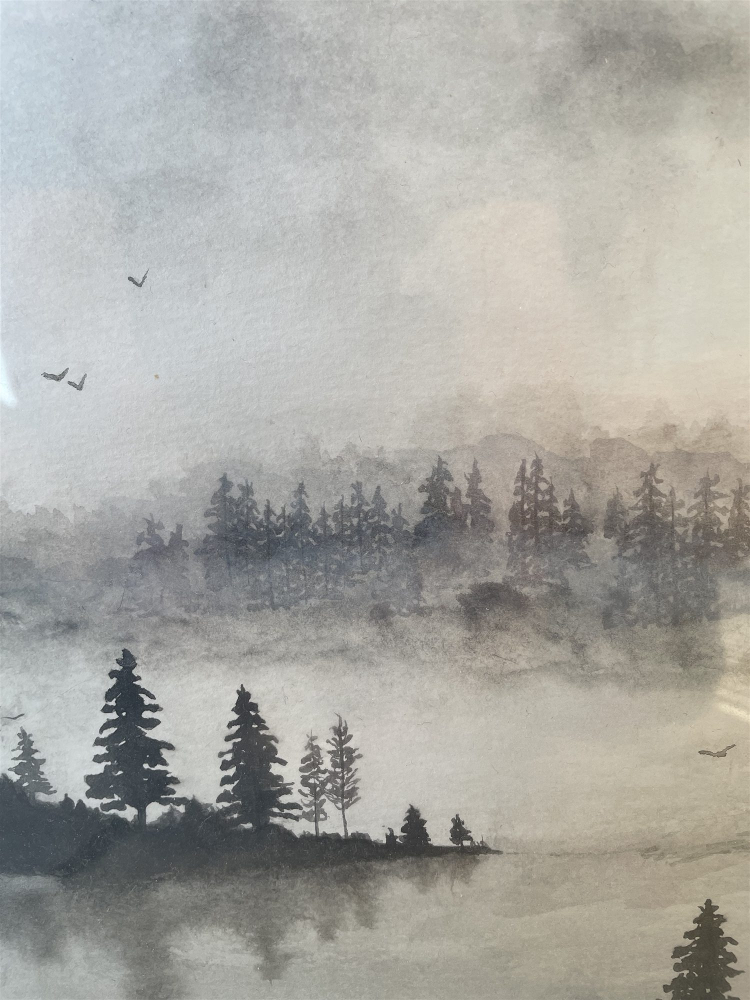

Whitney Koch
Fine Art
Texas
Process

Every piece starts with a line.
Selected Work
A small selectionOrnaments



Hand-painted each year in small numbers. Made to be kept, and handed down.
Paintings

Watercolor landscapes — treelines, still water, and weather, painted from life and memory.
Drawings
Graphite tree studies — each one drawn leaf by leaf, as it stands.
A small selection of recent pieces. Originals, commissions and more of the work on request.
Inquire
Commissions & inquiries
Interested in an original, a commission, or this year's ornaments? Leave a note.
Thank you — Whitney will be in touch.